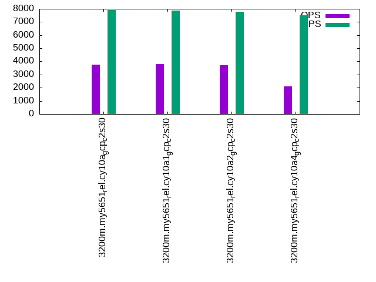

Introduction
This is a report for the insert benchmark with 3200M docs and 8 client(s). It is generated by scripts (bash, awk, sed) and Tufte might not be impressed. An overview of the insert benchmark is here and a short update is here. Below, by DBMS, I mean DBMS+version.config. An example is my8020.c10b40 where my means MySQL, 8020 is version 8.0.20 and c10b40 is the name for the configuration file.
The test server is a c2-standard-30 from GCP with 15 cores, hyperthreads disabled, 120G RAM, XFS + SW RAID 0 on 4 NVMe devices (1.5TB). The benchmark was run with 8 client and there were 1 or 3 connections per client (1 for queries or inserts without rate limits, 1+1 for rate limited inserts+deletes). There are 8 tables, client per table. It loads 400M rows per table without secondary indexes, creates secondary indexes, then inserts 10M rows per table with a delete per insert to avoid growing the table. It then does 3 read+write tests for 1800s each that do queries as fast as possible with 100, 500 and then 1000 inserts/second/client concurrent with the queries and 1000 deletes/second to avoid growing the table. The database is larger than memory.
The tested DBMS are:
- my5651_rel.cy10a_gcp_c2s30 - InnoDB and MySQL 5.6.51, rel build, cy10a_gcp_c2s30 config, compiled with CMAKE_BUILD_TYPE=Release -O2, base config
- my5651_rel.cy10a1_gcp_c2s30 - InnoDB and MySQL 5.6.51, rel build, cy10a_gcp_c2s30 config, compiled with CMAKE_BUILD_TYPE=Release -O2, adds innodb_use_native_aio=off
- my5651_rel.cy10a2_gcp_c2s30 - InnoDB and MySQL 5.6.51, rel build, cy10a_gcp_c2s30 config, compiled with CMAKE_BUILD_TYPE=Release -O2, adds innodb_io_capacity=20k, innodb_io_capacity_max=40k
- my5651_rel.cy10a4_gcp_c2s30 - InnoDB and MySQL 5.6.51, rel build, cy10a_gcp_c2s30 config, compiled with CMAKE_BUILD_TYPE=Release -O2, adds innodb_flush_method=fsync
Contents
- Summary
- l.i0: load without secondary indexes
- l.x: create secondary indexes
- l.i1: continue load after secondary indexes created
- q100.1: range queries with 100 insert/s per client
- q500.1: range queries with 500 insert/s per client
- q1000.1: range queries with 1000 insert/s per client
Summary
The numbers are inserts/s for l.i0 and l.i1, indexed docs (or rows) /s for l.x and queries/s for q*.2. The values are the average rate over the entire test for inserts (IPS) and queries (QPS). The range of values for IPS and QPS is split into 3 parts: bottom 25%, middle 50%, top 25%. Values in the bottom 25% have a red background, values in the top 25% have a green background and values in the middle have no color. A gray background is used for values that can be ignored because the DBMS did not sustain the target insert rate. Red backgrounds are not used when the minimum value is within 80% of the max value.
| dbms | l.i0 | l.x | l.i1 | q100.1 | q500.1 | q1000.1 |
|---|---|---|---|---|---|---|
| 3200m.my5651_rel.cy10a_gcp_c2s30 | 432199 | 446007 | 17252 | 3535 | 3877 | 3770 |
| 3200m.my5651_rel.cy10a1_gcp_c2s30 | 427065 | 439997 | 16996 | 3563 | 3898 | 3795 |
| 3200m.my5651_rel.cy10a2_gcp_c2s30 | 426439 | 435981 | 16320 | 3537 | 3789 | 3717 |
| 3200m.my5651_rel.cy10a4_gcp_c2s30 | 424459 | 447191 | 9324 | 1972 | 2493 | 2108 |
This table has relative throughput, throughput for the DBMS relative to the DBMS in the first line, using the absolute throughput from the previous table.
| dbms | l.i0 | l.x | l.i1 | q100.1 | q500.1 | q1000.1 |
|---|---|---|---|---|---|---|
| 3200m.my5651_rel.cy10a_gcp_c2s30 | 1.00 | 1.00 | 1.00 | 1.00 | 1.00 | 1.00 |
| 3200m.my5651_rel.cy10a1_gcp_c2s30 | 0.99 | 0.99 | 0.99 | 1.01 | 1.01 | 1.01 |
| 3200m.my5651_rel.cy10a2_gcp_c2s30 | 0.99 | 0.98 | 0.95 | 1.00 | 0.98 | 0.99 |
| 3200m.my5651_rel.cy10a4_gcp_c2s30 | 0.98 | 1.00 | 0.54 | 0.56 | 0.64 | 0.56 |
This lists the average rate of inserts/s for the tests that do inserts concurrent with queries. For such tests the query rate is listed in the table above. The read+write tests are setup so that the insert rate should match the target rate every second. Cells that are not at least 95% of the target have a red background to indicate a failure to satisfy the target.
| dbms | q100.1 | q500.1 | q1000.1 |
|---|---|---|---|
| my5651_rel.cy10a_gcp_c2s30 | 786 | 3928 | 7908 |
| my5651_rel.cy10a1_gcp_c2s30 | 786 | 3894 | 7856 |
| my5651_rel.cy10a2_gcp_c2s30 | 787 | 3852 | 7792 |
| my5651_rel.cy10a4_gcp_c2s30 | 737 | 3820 | 7520 |
| target | 800 | 4000 | 8000 |
l.i0
l.i0: load without secondary indexes. Graphs for performance per 1-second interval are here.
Average throughput:
Insert response time histogram: each cell has the percentage of responses that take <= the time in the header and max is the max response time in seconds. For the max column values in the top 25% of the range have a red background and in the bottom 25% of the range have a green background. The red background is not used when the min value is within 80% of the max value.
| dbms | 256us | 1ms | 4ms | 16ms | 64ms | 256ms | 1s | 4s | 16s | gt | max |
|---|---|---|---|---|---|---|---|---|---|---|---|
| my5651_rel.cy10a_gcp_c2s30 | 0.198 | 99.507 | 0.113 | 0.168 | 0.014 | nonzero | 0.268 | ||||
| my5651_rel.cy10a1_gcp_c2s30 | 0.218 | 99.483 | 0.115 | 0.169 | 0.015 | nonzero | 0.272 | ||||
| my5651_rel.cy10a2_gcp_c2s30 | 0.145 | 99.543 | 0.129 | 0.169 | 0.014 | nonzero | 0.271 | ||||
| my5651_rel.cy10a4_gcp_c2s30 | 0.236 | 99.350 | 0.229 | 0.171 | 0.015 | 0.239 |
Performance metrics for the DBMS listed above. Some are normalized by throughput, others are not. Legend for results is here.
ips qps rps rmbps wps wmbps rpq rkbpq wpi wkbpi csps cpups cspq cpupq dbgb1 dbgb2 rss maxop p50 p99 tag 432199 0 3400 13.3 2024.3 120.2 0.008 0.031 0.005 0.285 91575 43.6 0.212 15 210.5 339.0 85.7 0.268 54641 43553 3200m.my5651_rel.cy10a_gcp_c2s30 427065 0 3360 13.1 389.2 115.6 0.008 0.031 0.001 0.277 89317 43.6 0.209 15 210.5 339.0 85.7 0.272 53942 43553 3200m.my5651_rel.cy10a1_gcp_c2s30 426439 0 3354 13.1 2051.5 120.1 0.008 0.031 0.005 0.288 90462 43.5 0.212 15 210.5 339.0 85.7 0.271 53942 42854 3200m.my5651_rel.cy10a2_gcp_c2s30 424459 0 3338 13.0 429.4 111.6 0.008 0.031 0.001 0.269 92964 43.5 0.219 15 210.5 339.0 85.7 0.239 53642 43353 3200m.my5651_rel.cy10a4_gcp_c2s30
l.x
l.x: create secondary indexes.
Average throughput:
Performance metrics for the DBMS listed above. Some are normalized by throughput, others are not. Legend for results is here.
ips qps rps rmbps wps wmbps rpq rkbpq wpi wkbpi csps cpups cspq cpupq dbgb1 dbgb2 rss maxop p50 p99 tag 446007 0 2588 349.1 5443.1 556.9 0.006 0.802 0.012 1.279 17368 33.2 0.039 11 433.7 562.2 85.7 0.001 NA NA 3200m.my5651_rel.cy10a_gcp_c2s30 439997 0 1179 352.5 2914.2 537.7 0.003 0.820 0.007 1.251 13983 33.7 0.032 11 433.7 562.2 85.7 0.002 NA NA 3200m.my5651_rel.cy10a1_gcp_c2s30 435981 0 2549 350.2 5344.9 543.0 0.006 0.822 0.012 1.275 17523 33.7 0.040 12 433.7 562.2 85.7 0.002 NA NA 3200m.my5651_rel.cy10a2_gcp_c2s30 447191 0 1114 349.9 2953.6 536.1 0.002 0.801 0.007 1.228 23197 34.3 0.052 12 433.7 562.2 85.7 0.002 NA NA 3200m.my5651_rel.cy10a4_gcp_c2s30
l.i1
l.i1: continue load after secondary indexes created. Graphs for performance per 1-second interval are here.
Average throughput:
Insert response time histogram: each cell has the percentage of responses that take <= the time in the header and max is the max response time in seconds. For the max column values in the top 25% of the range have a red background and in the bottom 25% of the range have a green background. The red background is not used when the min value is within 80% of the max value.
| dbms | 256us | 1ms | 4ms | 16ms | 64ms | 256ms | 1s | 4s | 16s | gt | max |
|---|---|---|---|---|---|---|---|---|---|---|---|
| my5651_rel.cy10a_gcp_c2s30 | 1.341 | 68.493 | 21.074 | 9.048 | 0.043 | nonzero | nonzero | 4.018 | |||
| my5651_rel.cy10a1_gcp_c2s30 | 1.348 | 67.697 | 21.820 | 9.096 | 0.039 | nonzero | nonzero | 4.117 | |||
| my5651_rel.cy10a2_gcp_c2s30 | 1.892 | 64.564 | 24.131 | 9.354 | 0.060 | nonzero | 3.994 | ||||
| my5651_rel.cy10a4_gcp_c2s30 | 3.346 | 55.077 | 26.017 | 11.954 | 3.605 | nonzero | 3.006 |
Delete response time histogram: each cell has the percentage of responses that take <= the time in the header and max is the max response time in seconds. For the max column values in the top 25% of the range have a red background and in the bottom 25% of the range have a green background. The red background is not used when the min value is within 80% of the max value.
| dbms | 256us | 1ms | 4ms | 16ms | 64ms | 256ms | 1s | 4s | 16s | gt | max |
|---|---|---|---|---|---|---|---|---|---|---|---|
| my5651_rel.cy10a_gcp_c2s30 | 7.000 | 83.090 | 9.776 | 0.133 | nonzero | nonzero | 3.326 | ||||
| my5651_rel.cy10a1_gcp_c2s30 | 7.212 | 82.743 | 9.963 | 0.081 | nonzero | nonzero | 3.288 | ||||
| my5651_rel.cy10a2_gcp_c2s30 | 7.525 | 79.735 | 12.598 | 0.141 | nonzero | nonzero | 3.316 | ||||
| my5651_rel.cy10a4_gcp_c2s30 | 10.849 | 67.639 | 20.448 | 1.063 | 0.001 | nonzero | 2.228 |
Performance metrics for the DBMS listed above. Some are normalized by throughput, others are not. Legend for results is here.
ips qps rps rmbps wps wmbps rpq rkbpq wpi wkbpi csps cpups cspq cpupq dbgb1 dbgb2 rss maxop p50 p99 tag 17252 0 13882 210.3 26652.1 680.5 0.805 12.483 1.545 40.388 117947 27.5 6.836 239 654.1 820.1 85.7 4.018 1049 250 3200m.my5651_rel.cy10a_gcp_c2s30 16996 0 13332 209.3 24924.6 658.6 0.784 12.607 1.467 39.682 125478 27.8 7.383 245 654.1 820.6 85.7 4.117 999 250 3200m.my5651_rel.cy10a1_gcp_c2s30 16320 0 13544 205.4 28179.3 686.2 0.830 12.886 1.727 43.059 117582 26.5 7.205 244 654.2 818.5 85.7 3.994 949 200 3200m.my5651_rel.cy10a2_gcp_c2s30 9324 0 7270 204.8 12000.6 344.7 0.780 22.494 1.287 37.857 109329 18.3 11.726 294 654.1 822.1 85.7 3.006 350 100 3200m.my5651_rel.cy10a4_gcp_c2s30
q100.1
q100.1: range queries with 100 insert/s per client. Graphs for performance per 1-second interval are here.
Average throughput:
Query response time histogram: each cell has the percentage of responses that take <= the time in the header and max is the max response time in seconds. For max values in the top 25% of the range have a red background and in the bottom 25% of the range have a green background. The red background is not used when the min value is within 80% of the max value.
| dbms | 256us | 1ms | 4ms | 16ms | 64ms | 256ms | 1s | 4s | 16s | gt | max |
|---|---|---|---|---|---|---|---|---|---|---|---|
| my5651_rel.cy10a_gcp_c2s30 | 38.643 | 3.211 | 38.750 | 19.308 | 0.089 | nonzero | 0.094 | ||||
| my5651_rel.cy10a1_gcp_c2s30 | 38.660 | 3.122 | 39.236 | 18.902 | 0.080 | nonzero | 0.076 | ||||
| my5651_rel.cy10a2_gcp_c2s30 | 38.505 | 3.261 | 38.753 | 19.397 | 0.084 | nonzero | 0.105 | ||||
| my5651_rel.cy10a4_gcp_c2s30 | 38.637 | 4.172 | 28.092 | 23.605 | 5.331 | 0.163 | 0.158 |
Insert response time histogram: each cell has the percentage of responses that take <= the time in the header and max is the max response time in seconds. For max values in the top 25% of the range have a red background and in the bottom 25% of the range have a green background. The red background is not used when the min value is within 80% of the max value.
| dbms | 256us | 1ms | 4ms | 16ms | 64ms | 256ms | 1s | 4s | 16s | gt | max |
|---|---|---|---|---|---|---|---|---|---|---|---|
| my5651_rel.cy10a_gcp_c2s30 | 16.010 | 75.840 | 8.146 | 0.003 | 0.097 | ||||||
| my5651_rel.cy10a1_gcp_c2s30 | 15.458 | 76.399 | 8.132 | 0.010 | 0.089 | ||||||
| my5651_rel.cy10a2_gcp_c2s30 | 22.302 | 70.740 | 6.944 | 0.014 | 0.109 | ||||||
| my5651_rel.cy10a4_gcp_c2s30 | 11.184 | 63.601 | 24.691 | 0.524 | 0.194 |
Delete response time histogram: each cell has the percentage of responses that take <= the time in the header and max is the max response time in seconds. For max values in the top 25% of the range have a red background and in the bottom 25% of the range have a green background. The red background is not used when the min value is within 80% of the max value.
| dbms | 256us | 1ms | 4ms | 16ms | 64ms | 256ms | 1s | 4s | 16s | gt | max |
|---|---|---|---|---|---|---|---|---|---|---|---|
| my5651_rel.cy10a_gcp_c2s30 | 17.552 | 74.639 | 7.806 | 0.003 | 0.133 | ||||||
| my5651_rel.cy10a1_gcp_c2s30 | 17.149 | 75.128 | 7.715 | 0.007 | 0.077 | ||||||
| my5651_rel.cy10a2_gcp_c2s30 | 24.101 | 69.031 | 6.854 | 0.014 | 0.105 | ||||||
| my5651_rel.cy10a4_gcp_c2s30 | 12.253 | 63.267 | 23.983 | 0.497 | 0.207 |
Performance metrics for the DBMS listed above. Some are normalized by throughput, others are not. Legend for results is here.
ips qps rps rmbps wps wmbps rpq rkbpq wpi wkbpi csps cpups cspq cpupq dbgb1 dbgb2 rss maxop p50 p99 tag 786 3535 24368 380.4 21033.0 432.7 6.893 110.188 26.760 563.733 112640 18.6 31.861 789 654.1 820.1 85.7 0.094 463 128 3200m.my5651_rel.cy10a_gcp_c2s30 786 3563 23966 384.5 20449.6 435.5 6.727 110.498 26.017 567.388 116041 19.0 32.569 800 654.1 820.6 85.7 0.076 464 128 3200m.my5651_rel.cy10a1_gcp_c2s30 787 3537 24816 387.4 21534.1 437.2 7.016 112.155 27.369 569.028 114629 19.1 32.407 810 654.2 818.5 85.7 0.105 464 112 3200m.my5651_rel.cy10a2_gcp_c2s30 737 1972 12066 746.4 10501.1 258.6 6.118 387.565 14.250 359.353 106776 16.8 54.140 1278 654.1 822.1 85.7 0.158 256 16 3200m.my5651_rel.cy10a4_gcp_c2s30
q500.1
q500.1: range queries with 500 insert/s per client. Graphs for performance per 1-second interval are here.
Average throughput:

Query response time histogram: each cell has the percentage of responses that take <= the time in the header and max is the max response time in seconds. For max values in the top 25% of the range have a red background and in the bottom 25% of the range have a green background. The red background is not used when the min value is within 80% of the max value.
| dbms | 256us | 1ms | 4ms | 16ms | 64ms | 256ms | 1s | 4s | 16s | gt | max |
|---|---|---|---|---|---|---|---|---|---|---|---|
| my5651_rel.cy10a_gcp_c2s30 | 39.032 | 3.538 | 42.024 | 15.351 | 0.048 | 0.008 | 0.234 | ||||
| my5651_rel.cy10a1_gcp_c2s30 | 39.134 | 3.431 | 42.931 | 14.414 | 0.073 | 0.017 | nonzero | 0.440 | |||
| my5651_rel.cy10a2_gcp_c2s30 | 38.857 | 3.664 | 41.757 | 15.597 | 0.098 | 0.027 | nonzero | 0.428 | |||
| my5651_rel.cy10a4_gcp_c2s30 | 39.986 | 4.702 | 31.383 | 20.543 | 3.350 | 0.036 | 0.181 |
Insert response time histogram: each cell has the percentage of responses that take <= the time in the header and max is the max response time in seconds. For max values in the top 25% of the range have a red background and in the bottom 25% of the range have a green background. The red background is not used when the min value is within 80% of the max value.
| dbms | 256us | 1ms | 4ms | 16ms | 64ms | 256ms | 1s | 4s | 16s | gt | max |
|---|---|---|---|---|---|---|---|---|---|---|---|
| my5651_rel.cy10a_gcp_c2s30 | 53.603 | 44.378 | 2.002 | 0.014 | 0.003 | 0.444 | |||||
| my5651_rel.cy10a1_gcp_c2s30 | 51.465 | 46.302 | 2.115 | 0.084 | 0.034 | 0.811 | |||||
| my5651_rel.cy10a2_gcp_c2s30 | 57.053 | 40.871 | 1.949 | 0.080 | 0.047 | 0.697 | |||||
| my5651_rel.cy10a4_gcp_c2s30 | 41.928 | 51.254 | 6.701 | 0.116 | 0.199 |
Delete response time histogram: each cell has the percentage of responses that take <= the time in the header and max is the max response time in seconds. For max values in the top 25% of the range have a red background and in the bottom 25% of the range have a green background. The red background is not used when the min value is within 80% of the max value.
| dbms | 256us | 1ms | 4ms | 16ms | 64ms | 256ms | 1s | 4s | 16s | gt | max |
|---|---|---|---|---|---|---|---|---|---|---|---|
| my5651_rel.cy10a_gcp_c2s30 | 58.276 | 39.947 | 1.762 | 0.013 | 0.003 | 0.370 | |||||
| my5651_rel.cy10a1_gcp_c2s30 | 57.196 | 40.863 | 1.818 | 0.097 | 0.026 | 0.779 | |||||
| my5651_rel.cy10a2_gcp_c2s30 | 61.089 | 37.057 | 1.726 | 0.082 | 0.046 | 0.720 | |||||
| my5651_rel.cy10a4_gcp_c2s30 | 45.253 | 48.409 | 6.217 | 0.120 | 0.247 |
Performance metrics for the DBMS listed above. Some are normalized by throughput, others are not. Legend for results is here.
ips qps rps rmbps wps wmbps rpq rkbpq wpi wkbpi csps cpups cspq cpupq dbgb1 dbgb2 rss maxop p50 p99 tag 3928 3877 25307 393.9 19145.6 388.4 6.527 104.031 4.874 101.244 112313 20.5 28.968 793 654.1 820.1 85.7 0.234 495 112 3200m.my5651_rel.cy10a_gcp_c2s30 3894 3898 25078 396.7 18806.6 390.7 6.434 104.220 4.830 102.748 115378 20.8 29.601 800 654.1 820.6 85.7 0.440 495 64 3200m.my5651_rel.cy10a1_gcp_c2s30 3852 3789 25177 391.9 19784.8 393.5 6.645 105.913 5.136 104.596 113011 20.6 29.826 816 654.2 818.5 85.7 0.428 495 32 3200m.my5651_rel.cy10a2_gcp_c2s30 3820 2493 14030 826.0 10237.7 242.7 5.627 339.231 2.680 65.067 111008 19.7 44.521 1185 654.2 822.4 85.7 0.181 320 48 3200m.my5651_rel.cy10a4_gcp_c2s30
q1000.1
q1000.1: range queries with 1000 insert/s per client. Graphs for performance per 1-second interval are here.
Average throughput:
Query response time histogram: each cell has the percentage of responses that take <= the time in the header and max is the max response time in seconds. For max values in the top 25% of the range have a red background and in the bottom 25% of the range have a green background. The red background is not used when the min value is within 80% of the max value.
| dbms | 256us | 1ms | 4ms | 16ms | 64ms | 256ms | 1s | 4s | 16s | gt | max |
|---|---|---|---|---|---|---|---|---|---|---|---|
| my5651_rel.cy10a_gcp_c2s30 | 38.836 | 2.946 | 41.652 | 16.535 | 0.031 | nonzero | 0.084 | ||||
| my5651_rel.cy10a1_gcp_c2s30 | 38.839 | 2.890 | 42.372 | 15.832 | 0.059 | 0.007 | 0.210 | ||||
| my5651_rel.cy10a2_gcp_c2s30 | 38.552 | 3.184 | 41.605 | 16.560 | 0.083 | 0.016 | nonzero | 0.474 | |||
| my5651_rel.cy10a4_gcp_c2s30 | 39.161 | 4.426 | 29.538 | 21.621 | 5.195 | 0.059 | nonzero | 0.282 |
Insert response time histogram: each cell has the percentage of responses that take <= the time in the header and max is the max response time in seconds. For max values in the top 25% of the range have a red background and in the bottom 25% of the range have a green background. The red background is not used when the min value is within 80% of the max value.
| dbms | 256us | 1ms | 4ms | 16ms | 64ms | 256ms | 1s | 4s | 16s | gt | max |
|---|---|---|---|---|---|---|---|---|---|---|---|
| my5651_rel.cy10a_gcp_c2s30 | 58.648 | 39.913 | 1.439 | 0.064 | |||||||
| my5651_rel.cy10a1_gcp_c2s30 | 57.854 | 40.594 | 1.523 | 0.028 | 0.002 | 0.559 | |||||
| my5651_rel.cy10a2_gcp_c2s30 | 48.048 | 49.671 | 2.274 | 0.003 | 0.004 | 0.814 | |||||
| my5651_rel.cy10a4_gcp_c2s30 | 34.883 | 55.246 | 9.620 | 0.251 | nonzero | 0.271 |
Delete response time histogram: each cell has the percentage of responses that take <= the time in the header and max is the max response time in seconds. For max values in the top 25% of the range have a red background and in the bottom 25% of the range have a green background. The red background is not used when the min value is within 80% of the max value.
| dbms | 256us | 1ms | 4ms | 16ms | 64ms | 256ms | 1s | 4s | 16s | gt | max |
|---|---|---|---|---|---|---|---|---|---|---|---|
| my5651_rel.cy10a_gcp_c2s30 | 63.200 | 35.496 | 1.302 | 0.002 | 0.090 | ||||||
| my5651_rel.cy10a1_gcp_c2s30 | 63.130 | 35.509 | 1.332 | 0.028 | 0.002 | 0.530 | |||||
| my5651_rel.cy10a2_gcp_c2s30 | 53.598 | 44.428 | 1.963 | 0.007 | 0.003 | 0.994 | |||||
| my5651_rel.cy10a4_gcp_c2s30 | 37.584 | 53.114 | 9.066 | 0.237 | nonzero | 0.295 |
Performance metrics for the DBMS listed above. Some are normalized by throughput, others are not. Legend for results is here.
ips qps rps rmbps wps wmbps rpq rkbpq wpi wkbpi csps cpups cspq cpupq dbgb1 dbgb2 rss maxop p50 p99 tag 7908 3770 24589 381.1 21951.6 443.9 6.522 103.520 2.776 57.481 118302 22.2 31.380 883 654.6 821.2 85.7 0.084 479 368 3200m.my5651_rel.cy10a_gcp_c2s30 7856 3795 24334 384.0 21631.2 446.5 6.412 103.593 2.753 58.199 121592 22.5 32.037 889 654.5 821.7 85.7 0.210 479 112 3200m.my5651_rel.cy10a1_gcp_c2s30 7792 3717 24550 380.6 22482.5 451.2 6.605 104.866 2.885 59.287 120583 22.9 32.444 924 654.7 819.6 85.7 0.474 479 48 3200m.my5651_rel.cy10a2_gcp_c2s30 7520 2108 12124 714.6 11060.2 262.7 5.750 347.032 1.471 35.771 113998 21.1 54.066 1501 655.1 824.2 85.7 0.282 272 48 3200m.my5651_rel.cy10a4_gcp_c2s30
l.i0
l.i0: load without secondary indexes
Performance metrics for all DBMS, not just the ones listed above. Some are normalized by throughput, others are not. Legend for results is here.
ips qps rps rmbps wps wmbps rpq rkbpq wpi wkbpi csps cpups cspq cpupq dbgb1 dbgb2 rss maxop p50 p99 tag 432199 0 3400 13.3 2024.3 120.2 0.008 0.031 0.005 0.285 91575 43.6 0.212 15 210.5 339.0 85.7 0.268 54641 43553 3200m.my5651_rel.cy10a_gcp_c2s30 427065 0 3360 13.1 389.2 115.6 0.008 0.031 0.001 0.277 89317 43.6 0.209 15 210.5 339.0 85.7 0.272 53942 43553 3200m.my5651_rel.cy10a1_gcp_c2s30 426439 0 3354 13.1 2051.5 120.1 0.008 0.031 0.005 0.288 90462 43.5 0.212 15 210.5 339.0 85.7 0.271 53942 42854 3200m.my5651_rel.cy10a2_gcp_c2s30 424459 0 3338 13.0 429.4 111.6 0.008 0.031 0.001 0.269 92964 43.5 0.219 15 210.5 339.0 85.7 0.239 53642 43353 3200m.my5651_rel.cy10a4_gcp_c2s30
l.x
l.x: create secondary indexes
Performance metrics for all DBMS, not just the ones listed above. Some are normalized by throughput, others are not. Legend for results is here.
ips qps rps rmbps wps wmbps rpq rkbpq wpi wkbpi csps cpups cspq cpupq dbgb1 dbgb2 rss maxop p50 p99 tag 446007 0 2588 349.1 5443.1 556.9 0.006 0.802 0.012 1.279 17368 33.2 0.039 11 433.7 562.2 85.7 0.001 NA NA 3200m.my5651_rel.cy10a_gcp_c2s30 439997 0 1179 352.5 2914.2 537.7 0.003 0.820 0.007 1.251 13983 33.7 0.032 11 433.7 562.2 85.7 0.002 NA NA 3200m.my5651_rel.cy10a1_gcp_c2s30 435981 0 2549 350.2 5344.9 543.0 0.006 0.822 0.012 1.275 17523 33.7 0.040 12 433.7 562.2 85.7 0.002 NA NA 3200m.my5651_rel.cy10a2_gcp_c2s30 447191 0 1114 349.9 2953.6 536.1 0.002 0.801 0.007 1.228 23197 34.3 0.052 12 433.7 562.2 85.7 0.002 NA NA 3200m.my5651_rel.cy10a4_gcp_c2s30
l.i1
l.i1: continue load after secondary indexes created
Performance metrics for all DBMS, not just the ones listed above. Some are normalized by throughput, others are not. Legend for results is here.
ips qps rps rmbps wps wmbps rpq rkbpq wpi wkbpi csps cpups cspq cpupq dbgb1 dbgb2 rss maxop p50 p99 tag 17252 0 13882 210.3 26652.1 680.5 0.805 12.483 1.545 40.388 117947 27.5 6.836 239 654.1 820.1 85.7 4.018 1049 250 3200m.my5651_rel.cy10a_gcp_c2s30 16996 0 13332 209.3 24924.6 658.6 0.784 12.607 1.467 39.682 125478 27.8 7.383 245 654.1 820.6 85.7 4.117 999 250 3200m.my5651_rel.cy10a1_gcp_c2s30 16320 0 13544 205.4 28179.3 686.2 0.830 12.886 1.727 43.059 117582 26.5 7.205 244 654.2 818.5 85.7 3.994 949 200 3200m.my5651_rel.cy10a2_gcp_c2s30 9324 0 7270 204.8 12000.6 344.7 0.780 22.494 1.287 37.857 109329 18.3 11.726 294 654.1 822.1 85.7 3.006 350 100 3200m.my5651_rel.cy10a4_gcp_c2s30
q100.1
q100.1: range queries with 100 insert/s per client
Performance metrics for all DBMS, not just the ones listed above. Some are normalized by throughput, others are not. Legend for results is here.
ips qps rps rmbps wps wmbps rpq rkbpq wpi wkbpi csps cpups cspq cpupq dbgb1 dbgb2 rss maxop p50 p99 tag 786 3535 24368 380.4 21033.0 432.7 6.893 110.188 26.760 563.733 112640 18.6 31.861 789 654.1 820.1 85.7 0.094 463 128 3200m.my5651_rel.cy10a_gcp_c2s30 786 3563 23966 384.5 20449.6 435.5 6.727 110.498 26.017 567.388 116041 19.0 32.569 800 654.1 820.6 85.7 0.076 464 128 3200m.my5651_rel.cy10a1_gcp_c2s30 787 3537 24816 387.4 21534.1 437.2 7.016 112.155 27.369 569.028 114629 19.1 32.407 810 654.2 818.5 85.7 0.105 464 112 3200m.my5651_rel.cy10a2_gcp_c2s30 737 1972 12066 746.4 10501.1 258.6 6.118 387.565 14.250 359.353 106776 16.8 54.140 1278 654.1 822.1 85.7 0.158 256 16 3200m.my5651_rel.cy10a4_gcp_c2s30
q500.1
q500.1: range queries with 500 insert/s per client
Performance metrics for all DBMS, not just the ones listed above. Some are normalized by throughput, others are not. Legend for results is here.
ips qps rps rmbps wps wmbps rpq rkbpq wpi wkbpi csps cpups cspq cpupq dbgb1 dbgb2 rss maxop p50 p99 tag 3928 3877 25307 393.9 19145.6 388.4 6.527 104.031 4.874 101.244 112313 20.5 28.968 793 654.1 820.1 85.7 0.234 495 112 3200m.my5651_rel.cy10a_gcp_c2s30 3894 3898 25078 396.7 18806.6 390.7 6.434 104.220 4.830 102.748 115378 20.8 29.601 800 654.1 820.6 85.7 0.440 495 64 3200m.my5651_rel.cy10a1_gcp_c2s30 3852 3789 25177 391.9 19784.8 393.5 6.645 105.913 5.136 104.596 113011 20.6 29.826 816 654.2 818.5 85.7 0.428 495 32 3200m.my5651_rel.cy10a2_gcp_c2s30 3820 2493 14030 826.0 10237.7 242.7 5.627 339.231 2.680 65.067 111008 19.7 44.521 1185 654.2 822.4 85.7 0.181 320 48 3200m.my5651_rel.cy10a4_gcp_c2s30
q1000.1
q1000.1: range queries with 1000 insert/s per client
Performance metrics for all DBMS, not just the ones listed above. Some are normalized by throughput, others are not. Legend for results is here.
ips qps rps rmbps wps wmbps rpq rkbpq wpi wkbpi csps cpups cspq cpupq dbgb1 dbgb2 rss maxop p50 p99 tag 7908 3770 24589 381.1 21951.6 443.9 6.522 103.520 2.776 57.481 118302 22.2 31.380 883 654.6 821.2 85.7 0.084 479 368 3200m.my5651_rel.cy10a_gcp_c2s30 7856 3795 24334 384.0 21631.2 446.5 6.412 103.593 2.753 58.199 121592 22.5 32.037 889 654.5 821.7 85.7 0.210 479 112 3200m.my5651_rel.cy10a1_gcp_c2s30 7792 3717 24550 380.6 22482.5 451.2 6.605 104.866 2.885 59.287 120583 22.9 32.444 924 654.7 819.6 85.7 0.474 479 48 3200m.my5651_rel.cy10a2_gcp_c2s30 7520 2108 12124 714.6 11060.2 262.7 5.750 347.032 1.471 35.771 113998 21.1 54.066 1501 655.1 824.2 85.7 0.282 272 48 3200m.my5651_rel.cy10a4_gcp_c2s30
l.i0
- l.i0: load without secondary indexes
- Legend for results is here.
- Each entry lists the percentage of responses that fit in that bucket (slower than max time for previous bucket, faster than min time for next bucket).
Insert response time histogram
256us 1ms 4ms 16ms 64ms 256ms 1s 4s 16s gt max tag 0.000 0.198 99.507 0.113 0.168 0.014 nonzero 0.000 0.000 0.000 0.268 my5651_rel.cy10a_gcp_c2s30 0.000 0.218 99.483 0.115 0.169 0.015 nonzero 0.000 0.000 0.000 0.272 my5651_rel.cy10a1_gcp_c2s30 0.000 0.145 99.543 0.129 0.169 0.014 nonzero 0.000 0.000 0.000 0.271 my5651_rel.cy10a2_gcp_c2s30 0.000 0.236 99.350 0.229 0.171 0.015 0.000 0.000 0.000 0.000 0.239 my5651_rel.cy10a4_gcp_c2s30
l.x
- l.x: create secondary indexes
- Legend for results is here.
- Each entry lists the percentage of responses that fit in that bucket (slower than max time for previous bucket, faster than min time for next bucket).
TODO - determine whether there is data for create index response time
l.i1
- l.i1: continue load after secondary indexes created
- Legend for results is here.
- Each entry lists the percentage of responses that fit in that bucket (slower than max time for previous bucket, faster than min time for next bucket).
Insert response time histogram
256us 1ms 4ms 16ms 64ms 256ms 1s 4s 16s gt max tag 0.000 0.000 1.341 68.493 21.074 9.048 0.043 nonzero nonzero 0.000 4.018 my5651_rel.cy10a_gcp_c2s30 0.000 0.000 1.348 67.697 21.820 9.096 0.039 nonzero nonzero 0.000 4.117 my5651_rel.cy10a1_gcp_c2s30 0.000 0.000 1.892 64.564 24.131 9.354 0.060 nonzero 0.000 0.000 3.994 my5651_rel.cy10a2_gcp_c2s30 0.000 0.000 3.346 55.077 26.017 11.954 3.605 nonzero 0.000 0.000 3.006 my5651_rel.cy10a4_gcp_c2s30
Delete response time histogram
256us 1ms 4ms 16ms 64ms 256ms 1s 4s 16s gt max tag 0.000 0.000 7.000 83.090 9.776 0.133 nonzero nonzero 0.000 0.000 3.326 my5651_rel.cy10a_gcp_c2s30 0.000 0.000 7.212 82.743 9.963 0.081 nonzero nonzero 0.000 0.000 3.288 my5651_rel.cy10a1_gcp_c2s30 0.000 0.000 7.525 79.735 12.598 0.141 nonzero nonzero 0.000 0.000 3.316 my5651_rel.cy10a2_gcp_c2s30 0.000 0.000 10.849 67.639 20.448 1.063 0.001 nonzero 0.000 0.000 2.228 my5651_rel.cy10a4_gcp_c2s30
q100.1
- q100.1: range queries with 100 insert/s per client
- Legend for results is here.
- Each entry lists the percentage of responses that fit in that bucket (slower than max time for previous bucket, faster than min time for next bucket).
Query response time histogram
256us 1ms 4ms 16ms 64ms 256ms 1s 4s 16s gt max tag 38.643 3.211 38.750 19.308 0.089 nonzero 0.000 0.000 0.000 0.000 0.094 my5651_rel.cy10a_gcp_c2s30 38.660 3.122 39.236 18.902 0.080 nonzero 0.000 0.000 0.000 0.000 0.076 my5651_rel.cy10a1_gcp_c2s30 38.505 3.261 38.753 19.397 0.084 nonzero 0.000 0.000 0.000 0.000 0.105 my5651_rel.cy10a2_gcp_c2s30 38.637 4.172 28.092 23.605 5.331 0.163 0.000 0.000 0.000 0.000 0.158 my5651_rel.cy10a4_gcp_c2s30
Insert response time histogram
256us 1ms 4ms 16ms 64ms 256ms 1s 4s 16s gt max tag 0.000 0.000 16.010 75.840 8.146 0.003 0.000 0.000 0.000 0.000 0.097 my5651_rel.cy10a_gcp_c2s30 0.000 0.000 15.458 76.399 8.132 0.010 0.000 0.000 0.000 0.000 0.089 my5651_rel.cy10a1_gcp_c2s30 0.000 0.000 22.302 70.740 6.944 0.014 0.000 0.000 0.000 0.000 0.109 my5651_rel.cy10a2_gcp_c2s30 0.000 0.000 11.184 63.601 24.691 0.524 0.000 0.000 0.000 0.000 0.194 my5651_rel.cy10a4_gcp_c2s30
Delete response time histogram
256us 1ms 4ms 16ms 64ms 256ms 1s 4s 16s gt max tag 0.000 0.000 17.552 74.639 7.806 0.003 0.000 0.000 0.000 0.000 0.133 my5651_rel.cy10a_gcp_c2s30 0.000 0.000 17.149 75.128 7.715 0.007 0.000 0.000 0.000 0.000 0.077 my5651_rel.cy10a1_gcp_c2s30 0.000 0.000 24.101 69.031 6.854 0.014 0.000 0.000 0.000 0.000 0.105 my5651_rel.cy10a2_gcp_c2s30 0.000 0.000 12.253 63.267 23.983 0.497 0.000 0.000 0.000 0.000 0.207 my5651_rel.cy10a4_gcp_c2s30
q500.1
- q500.1: range queries with 500 insert/s per client
- Legend for results is here.
- Each entry lists the percentage of responses that fit in that bucket (slower than max time for previous bucket, faster than min time for next bucket).
Query response time histogram
256us 1ms 4ms 16ms 64ms 256ms 1s 4s 16s gt max tag 39.032 3.538 42.024 15.351 0.048 0.008 0.000 0.000 0.000 0.000 0.234 my5651_rel.cy10a_gcp_c2s30 39.134 3.431 42.931 14.414 0.073 0.017 nonzero 0.000 0.000 0.000 0.440 my5651_rel.cy10a1_gcp_c2s30 38.857 3.664 41.757 15.597 0.098 0.027 nonzero 0.000 0.000 0.000 0.428 my5651_rel.cy10a2_gcp_c2s30 39.986 4.702 31.383 20.543 3.350 0.036 0.000 0.000 0.000 0.000 0.181 my5651_rel.cy10a4_gcp_c2s30
Insert response time histogram
256us 1ms 4ms 16ms 64ms 256ms 1s 4s 16s gt max tag 0.000 0.000 53.603 44.378 2.002 0.014 0.003 0.000 0.000 0.000 0.444 my5651_rel.cy10a_gcp_c2s30 0.000 0.000 51.465 46.302 2.115 0.084 0.034 0.000 0.000 0.000 0.811 my5651_rel.cy10a1_gcp_c2s30 0.000 0.000 57.053 40.871 1.949 0.080 0.047 0.000 0.000 0.000 0.697 my5651_rel.cy10a2_gcp_c2s30 0.000 0.000 41.928 51.254 6.701 0.116 0.000 0.000 0.000 0.000 0.199 my5651_rel.cy10a4_gcp_c2s30
Delete response time histogram
256us 1ms 4ms 16ms 64ms 256ms 1s 4s 16s gt max tag 0.000 0.000 58.276 39.947 1.762 0.013 0.003 0.000 0.000 0.000 0.370 my5651_rel.cy10a_gcp_c2s30 0.000 0.000 57.196 40.863 1.818 0.097 0.026 0.000 0.000 0.000 0.779 my5651_rel.cy10a1_gcp_c2s30 0.000 0.000 61.089 37.057 1.726 0.082 0.046 0.000 0.000 0.000 0.720 my5651_rel.cy10a2_gcp_c2s30 0.000 0.000 45.253 48.409 6.217 0.120 0.000 0.000 0.000 0.000 0.247 my5651_rel.cy10a4_gcp_c2s30
q1000.1
- q1000.1: range queries with 1000 insert/s per client
- Legend for results is here.
- Each entry lists the percentage of responses that fit in that bucket (slower than max time for previous bucket, faster than min time for next bucket).
Query response time histogram
256us 1ms 4ms 16ms 64ms 256ms 1s 4s 16s gt max tag 38.836 2.946 41.652 16.535 0.031 nonzero 0.000 0.000 0.000 0.000 0.084 my5651_rel.cy10a_gcp_c2s30 38.839 2.890 42.372 15.832 0.059 0.007 0.000 0.000 0.000 0.000 0.210 my5651_rel.cy10a1_gcp_c2s30 38.552 3.184 41.605 16.560 0.083 0.016 nonzero 0.000 0.000 0.000 0.474 my5651_rel.cy10a2_gcp_c2s30 39.161 4.426 29.538 21.621 5.195 0.059 nonzero 0.000 0.000 0.000 0.282 my5651_rel.cy10a4_gcp_c2s30
Insert response time histogram
256us 1ms 4ms 16ms 64ms 256ms 1s 4s 16s gt max tag 0.000 0.000 58.648 39.913 1.439 0.000 0.000 0.000 0.000 0.000 0.064 my5651_rel.cy10a_gcp_c2s30 0.000 0.000 57.854 40.594 1.523 0.028 0.002 0.000 0.000 0.000 0.559 my5651_rel.cy10a1_gcp_c2s30 0.000 0.000 48.048 49.671 2.274 0.003 0.004 0.000 0.000 0.000 0.814 my5651_rel.cy10a2_gcp_c2s30 0.000 0.000 34.883 55.246 9.620 0.251 nonzero 0.000 0.000 0.000 0.271 my5651_rel.cy10a4_gcp_c2s30
Delete response time histogram
256us 1ms 4ms 16ms 64ms 256ms 1s 4s 16s gt max tag 0.000 0.000 63.200 35.496 1.302 0.002 0.000 0.000 0.000 0.000 0.090 my5651_rel.cy10a_gcp_c2s30 0.000 0.000 63.130 35.509 1.332 0.028 0.002 0.000 0.000 0.000 0.530 my5651_rel.cy10a1_gcp_c2s30 0.000 0.000 53.598 44.428 1.963 0.007 0.003 0.000 0.000 0.000 0.994 my5651_rel.cy10a2_gcp_c2s30 0.000 0.000 37.584 53.114 9.066 0.237 nonzero 0.000 0.000 0.000 0.295 my5651_rel.cy10a4_gcp_c2s30